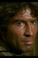

Also known as:La morte accarezza a mezzanotte (original title)
Country:Italy, 102 minutes
Spoken languages:Italian
Genres:Mystery, Thriller, Crime, Horror
Director(s):Luciano Ercoli
Writer(s):
Video Codec:Unknown
Number: 2607


Certification:
Storyline:
Valentina, a beautiful fashion model, takes an experimental drug as part of a scientific experiment. While influenced by the drug, Valentina has a vision of a young woman being brutally murdered with a viciously spiked glove. It turns out that a woman was killed in exactly the same way not long ago and soon Valentina finds herself stalked by the same killer.
Cast: 


Medium: Bluray,
Comments: Part of: Giallo Essentials - Blue
Loaned: No
Aspect ratio: Unknown